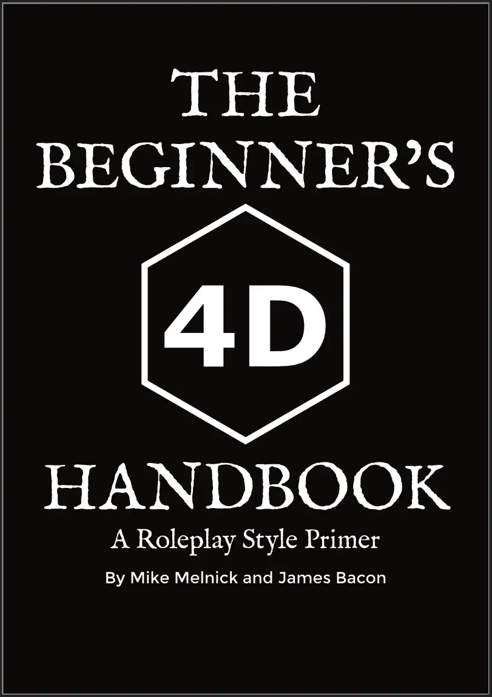

Aprenda a entrar e se manter no personagem pelo maior tempo e com a maior frequência possíveis. Uma abordagem holística para criar momentos memoráveis no seu RPG.
Conheça o Estilo 4DO que é o RPG em 4D?
O estilo 4D é o compromisso de entrar e se manter no personagem o máximo que der. Essa dedicação vai muito além da fala em primeira pessoa; trata-se de uma postura que elimina distrações para que você realmente possa jogar RPG.
Alta Confiança
Todos agem de boa-fé, eliminando trapaças e focando proativamente nos objetivos e motivações de seus personagens sem medo de julgamentos ou otimizações alheias.
Foco no Personagem
Limitação consciente de conversas paralelas, interações "meta-game" e celular na mesa. O jogo flui sem as pausas constantes para consultar regras ou tirar o foco.
Turnos Dinâmicos
A alternância de turnos curtos (focando em 2 a 3 frases) agiliza a velocidade de jogo e mantém todos atentos, diminuindo o tempo de espera do grupo.
O Manual Completo
Quer se aprofundar no estilo 4D? Confira a versão completa em livro, disponível na DriveThruRPG.

The Beginner's 4D Handbook
A Roleplay Style Primer, por Mike Melnick e James Bacon.
Ver no DriveThruRPG